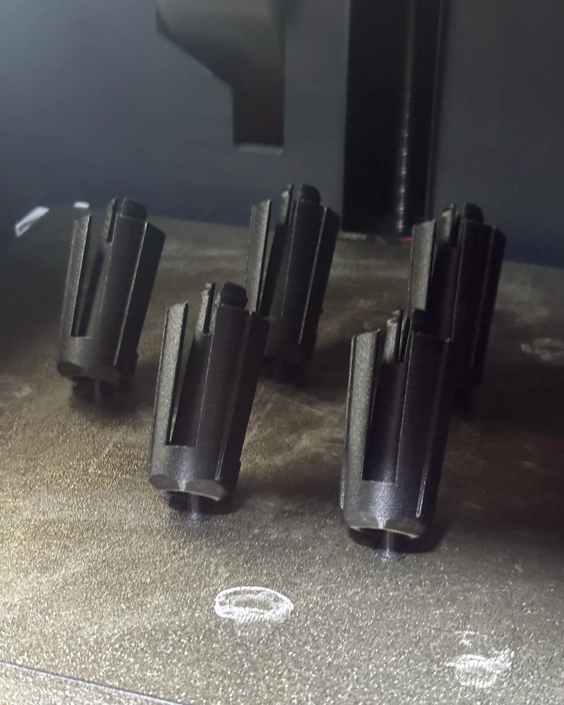
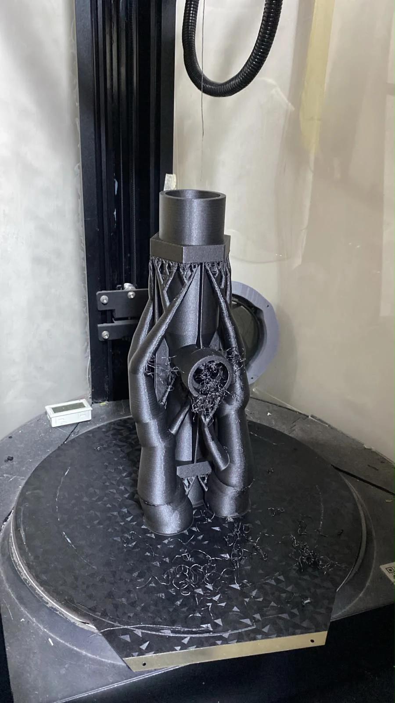
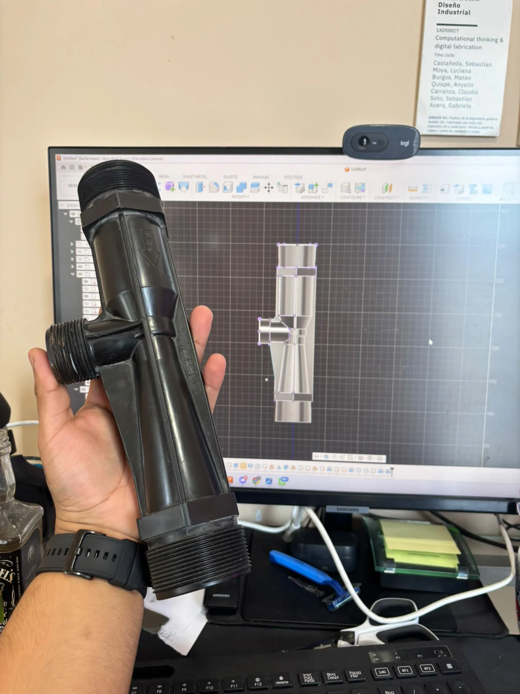
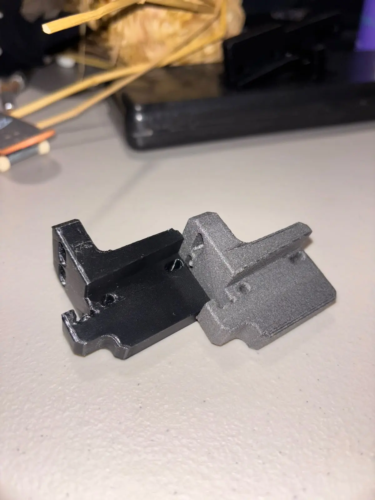
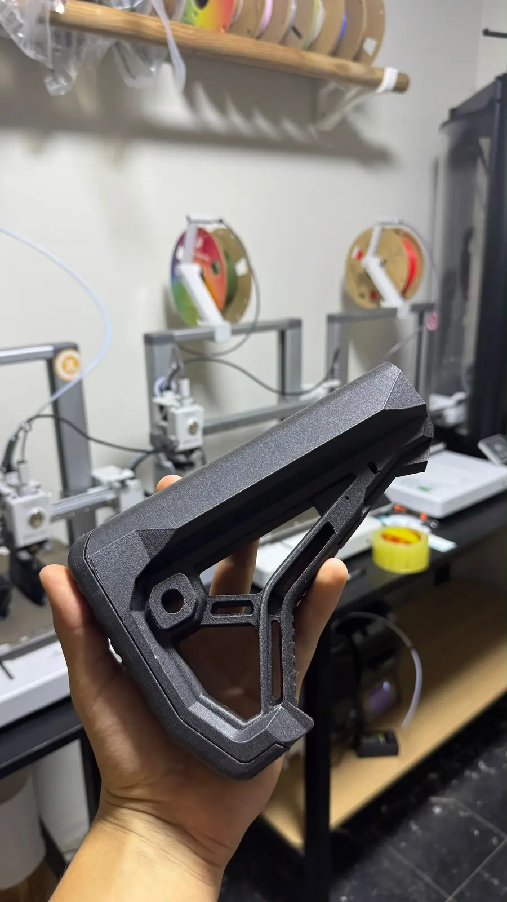
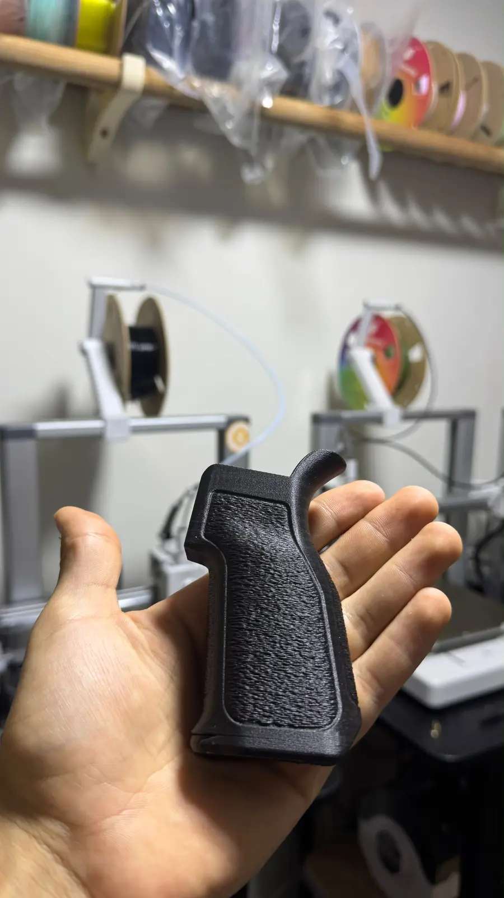

Repuestos técnicos a medida.
Cuando la pieza ya no se consigue, se rompe seguido o nunca existió. Partimos de la pieza, una foto o un plano, y la fabricamos en el material que su uso necesita.
Respondemos el mismo día, de lunes a viernes.

La pieza está descontinuada
La escaneamos o medimos y la volvemos a fabricar.
La pieza falla seguido
Corregimos el diseño o cambiamos el material para que dure.
Necesitas una o cien
Desde una unidad hasta series cortas, sin pedido mínimo.
De la pieza rota a la pieza final.
Escaneamos o modelamos la pieza, imprimimos una prueba para validar el calce y recién ahí la fabricamos en el material final. Sin plano y sin archivo.
Materiales
Si no sabes cuál necesitas, cuéntanos dónde va la pieza y lo definimos contigo.
PETGSoportes, carcasas y piezas de uso diario.
Resistente, un poco flexible y no se quiebra con facilidad. Aguanta la humedad.
PETG con fibra de carbonoPiezas de conexión y soportes que deben mantener la forma.
El mismo PETG, pero más rígido y con acabado mate. No se dobla bajo carga.
ABSCarcasas, tapas y piezas del interior de un auto.
Aguanta golpes y calor moderado. Se puede lijar y pintar.
ASAPiezas exteriores de auto, marcos y señalética.
Parecido al ABS, pero hecho para exteriores: el sol no lo pone amarillo ni lo debilita.
Policarbonato (PC)Protectores y piezas cerca de motores o lámparas.
Muy duro y resistente al calor. Para piezas que reciben esfuerzo fuerte.
Nylon (PA)Engranajes, bisagras, bujes y piezas que se mueven.
Resiste el roce y el desgaste. Se flexiona sin romperse.
Nylon con fibra de carbonoSoportes de maquinaria y piezas técnicas exigidas.
Rígido, liviano y muy resistente. El más fuerte de esta lista.
TPUConectores, topes, sellos y protectores.
Flexible como el caucho. Absorbe golpes y vibraciones.
Más repuestos
Réplicas, correcciones y series para autos, maquinaria y equipos.





Antes de escribirnos.
¿Hay pedido mínimo?
No. Hacemos desde una pieza y también series cortas.
¿Pueden mejorar una pieza que siempre falla?
Sí. Ajustamos el diseño, el material o ambos.
¿Cuánto demora?
Depende de la pieza. Si hay que escanear y modelar toma algo más; te damos la fecha al cotizar.
Mándanos la pieza.
Una foto con medidas, dónde se usa y cuántas necesitas.
Respondemos el mismo día, de lunes a viernes.
Envíos a todo el Perú. Para archivos pesados: hola@unyco.pe